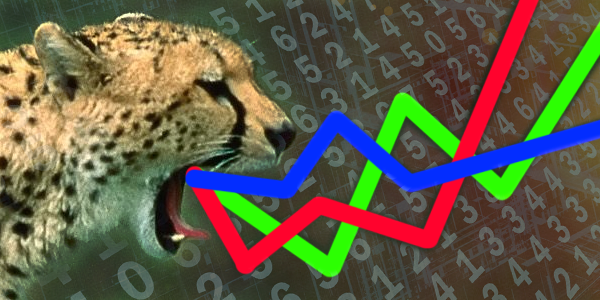

Allows examiners to investigate the data to create a picture of the activities that can be considered a threat to the system using the necessary protocols. It has an efficient search that does not la the transit in the network and collects all necessary data. It quickly responds to unusual patters in the system and from all sources.
Features:
- Integrated geospatial, link, temporal and statistical visualizations enhance the accuracy.
- Timeliness of intelligence by presenting massive amounts of data as one easy to digest picture.
- Enables teams to gather the data from possible threats in order to create a solution.
- Creates a map of the route of the malicious data that is leaking into the system.
Benefits:
- Minimized working data to prevent overload.
- Decreases the need of IT infrastructure, thus minimizing maintenance cost.
- Allows data to run faster thru the network, since it isolates data that may be harmful.